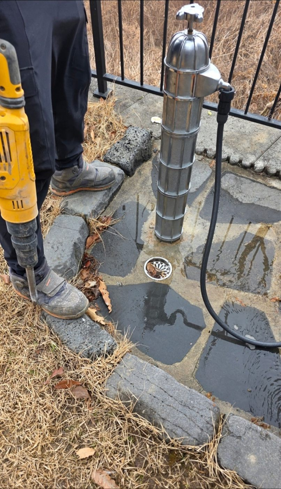
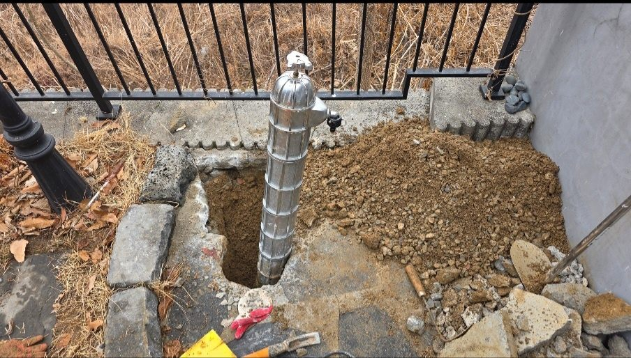

현장 상황
안성시 미양면 주택 마당의 부동전 교체 현장입니다. 부동전은 겨울철 동파를 막으려고 밸브를 땅속 깊이 두고 수도를 여닫는 외부 수전이라, 오래 쓰면 내부 부품이 마모되어 완전히 잠기지 않거나 물이 새는 일이 생깁니다.

주변 굴착
부동전은 땅속 깊이 연결된 구조라 교체하려면 주변을 파내야 합니다. 마당 돌바닥을 걷어내고 부동전 본체와 배관이 드러날 때까지 굴착했습니다.

새 부동전 설치
노후한 부동전은 통째로 새 제품으로 교체하고, 연결부를 다시 정리했습니다. 설치 후에는 밸브를 여러 번 열고 잠그며 정상 작동과 완전 차단 여부를 확인했습니다.

부동전 교체 시 확인할 점
부동전은 지상의 수전과 땅속의 밸브가 긴 봉으로 연결된 구조라, 겉이 멀쩡해도 땅속 밸브의 패킹이 닳으면 물이 완전히 잠기지 않습니다. 수전 아래 땅이 계속 젖어 있거나 수도를 잠가도 계량기가 미세하게 움직인다면 내부 점검이 필요합니다. 교체할 때는 설치 깊이에 맞는 제품을 쓰고, 설치 후 완전히 잠기는지까지 확인해야 겨울철 동파를 막을 수 있습니다.
마무리
마당 수전 주변이 계속 젖어 있거나 물이 잘 잠기지 않는 느낌이 든다면 부동전 상태를 점검받아 보시길 권합니다. 방치하면 겨울철 동파로 이어져 다시 땅을 파야 하는 더 큰 공사가 될 수 있습니다.
안성 미양면을 비롯한 전원주택, 농가주택 지역에서 겨울철 동파나 마당 수전 누수가 걱정되시면 미리 문의해 주세요.
접수 안내
비슷한 증상으로 문의하실 곳을 찾고 계신다면 전화로 접수해 주세요. 접수 건은 확인 후 신속하게 연결해 안내해 드리며, 현장 진단 후 견적에 동의하신 뒤에만 작업이 진행됩니다.